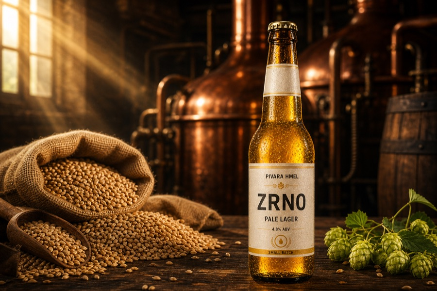
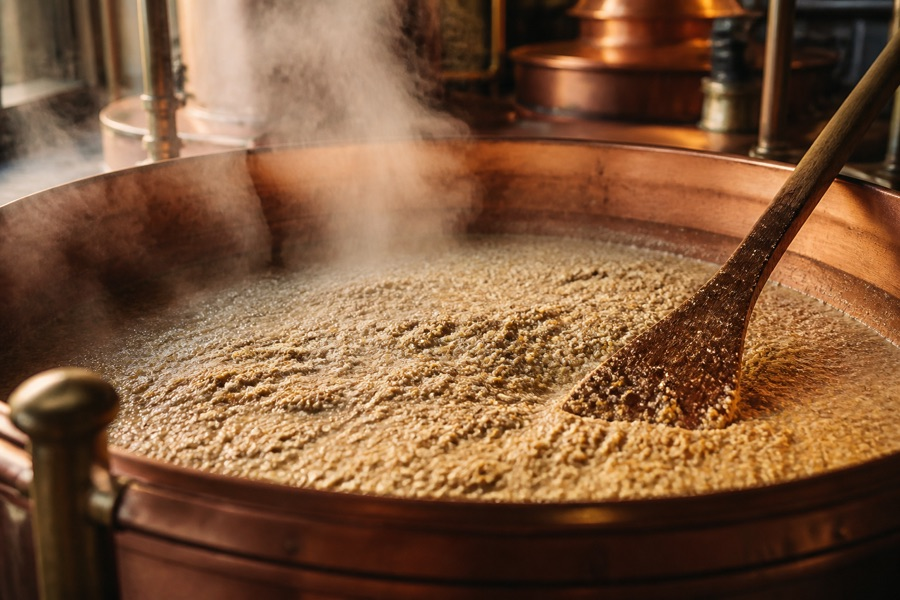
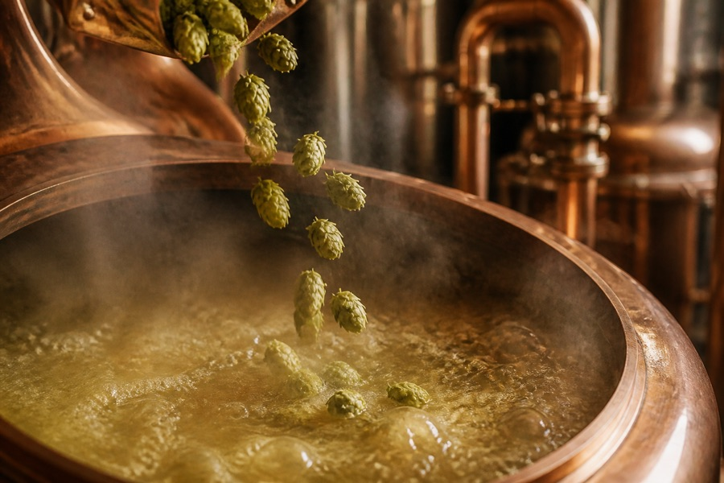
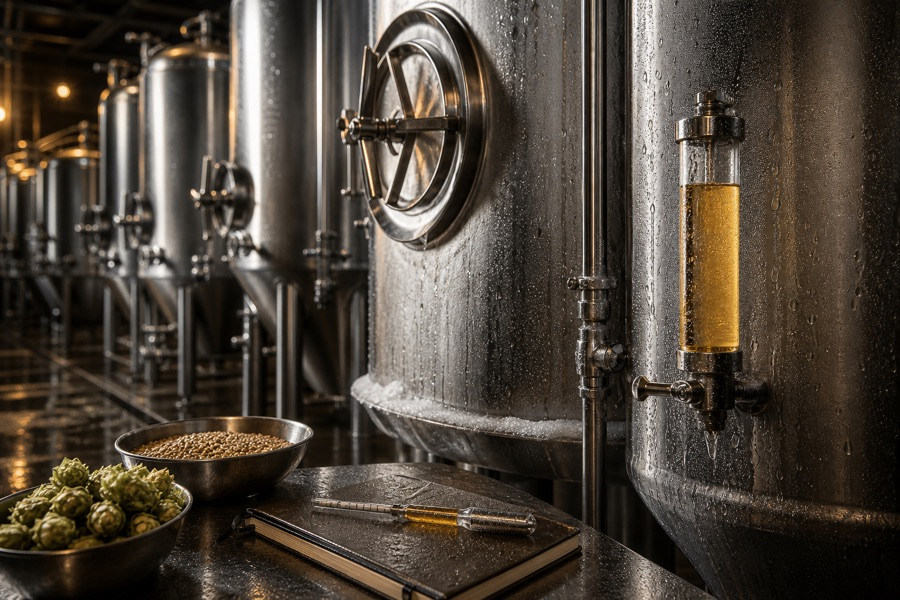
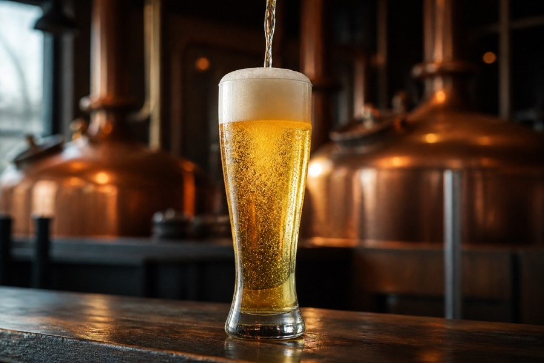

Слад и мелење
Пилснер и виенски слад, ситно мелени за чист, лебно-сладок екстракт без печени тонови.

03 / Од зрно до чаша
Пет чекори. Без кратенки. Следи го патувањето на Зрно, нашиот пале лагер, од првото мелење до ладната чаша.
Pilsner, Vienna
Илустративен приказ според рецептотПилснер и виенски слад, ситно мелени за чист, лебно-сладок екстракт без печени тонови.

Едноставно замешување на средна температура за добро избистрено, питко тело.

Благороден Saaz и Hallertau додадени умерено — само 18 IBU, тек колку да го засушат завршетокот.

Ладна лагер-ферментација и долго одлежување за чистина без естри.

Лагерирано додека не се избистри светло злато; сервирано на 5–7°C во висока чаша.

05 / Љубопитен за повеќе?
Секое пиво има свој слад, свој квасец и свое време. Истражи ги рецептите.
Откриј ги рецептите